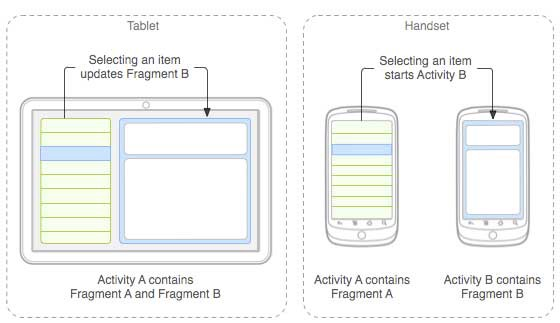
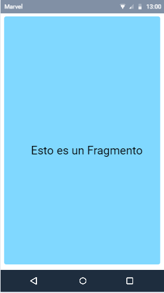
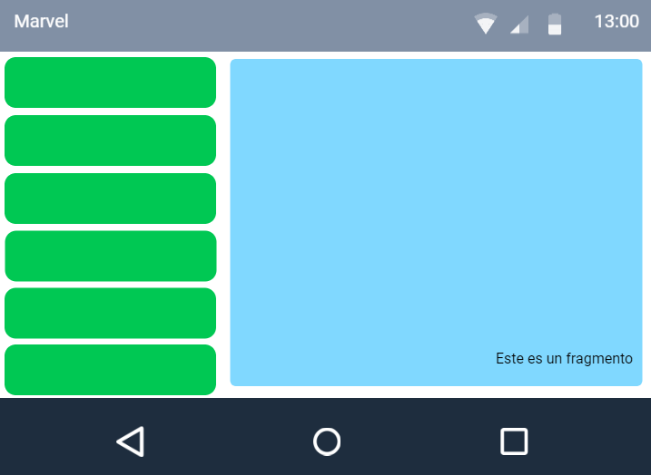
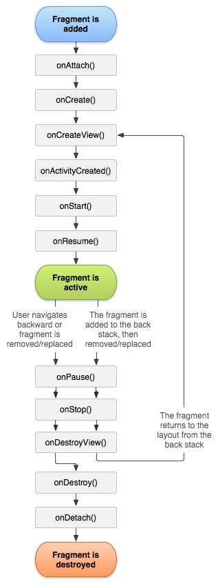
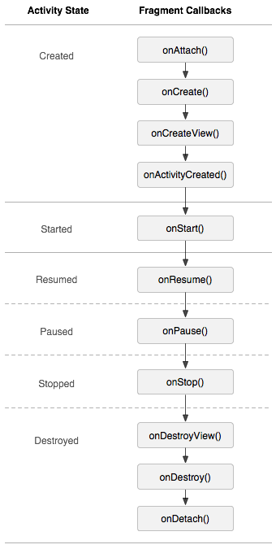

Universidad Centroamericana "José Simeón Cañas".
Programación de dispositivos móviles.
Ciclo 01/19.
Laboratorio 05.
Viernes, 12 de abril de 2019.
Temario:
Conceptualización del manejo visual de listas a través de RecyclerView’s, ahondando
en su filosofía de diseño.
Implementación visual de la información adaptada dentro del RecyclerView a través de
CardView’s.
Implementación de interfaces de usuarios orientadas a el manejo de grandes
cantidades de información.
Métodos de manipulación de datos.
Objetivos:
Comprender la filosofía de diseño de un RecyclerView, y porqué su utilización es
importante para el manejo de grandes cantidades de información.
Manejar gráficamente la información de una lista haciendo uso de las clases
referentes al uso del RecyclerView.
Implementar interfaces de usuario amigables haciendo uso de los recursos
proporcionados por el CardView.
Fragmentos.
Un Fragmento representa un comportamiento o una parte de la interfaz de usuario en una Activity.
Filosofía de diseño
Se debe diseñar cada fragmento como un componente modular y reutilizable de la
actividad.
Se debe evitar la manipulación directa de un fragmento desde otro fragmento.
Puedes reutilizar tus fragmentos en diferentes configuraciones de diseño para optimizar la
experiencia del usuario en función del espacio de pantalla disponible.
Como la pantalla de una tablet es mucho más grande que la de un teléfono, hay más espacio para
combinar e intercambiar componentes de la IU.

Puedes combinar múltiples fragmentos en una sola actividad para crear una IU multipanel y volver a
usar un fragmento en múltiples actividades.
Tipos de Fragmento
Fragment estático: se declara en el fichero XML de la carpeta Layout
directamente. Este Fragment tendrá la cualidad de no poder ser sustituido o eliminado.

Fragment dinámico: se crea desde código Java y se asocia a un ViewGroup.
Éste se podrá eliminar o sustituir por otro Fragment u otro contenido

Ciclo de vida de un fragmento
Las mismas prácticas que se aplican para la administración del ciclo de vida de una actividad también
se aplican a los fragmentos.

Reanudada
El fragmento está visible en la actividad que se está ejecutando.
Pausada
Otra actividad se encuentra en primer plano y tiene el foco, pero la actividad en la que reside
este fragmento aún está visible.
Detenida
El fragmento no está visible. O bien se detuvo la actividad anfitriona o se quitó el fragmento
de la actividad.
El ciclo de vida de la actividad, en la que reside el fragmento, afecta directamente al ciclo de vida
del fragmento.
Cada callback del ciclo de vida para la actividad genera un callback similar para cada fragmento.
Por ejemplo, cuando la actividad recibe onPause(), cada fragmento en la actividad recibe
onPause().
Los fragmentos tienen algunos callbacks del ciclo de vida adicionales que abordan la interacción
única con la actividad para poder realizar acciones como crear y destruir la IU del fragmento:
onAttach()
Recibe una llamada cuando se asocia el fragmento con la actividad
onCreateView()
Se lo llama para crear la jerarquía de vistas asociada con el fragmento.
onActivityCreated()
Se lo llama cuando el método onCreate() de la actividad realiza un callback.
onDestroyView()
Se lo llama cuando se quita la jerarquía de vistas asociada con el fragmento.
onDetach()
Se lo llama cuando se desasocia el fragmento de la actividad.
Solo cuando la actividad se encuentra en estado de reanudada el ciclo de vida de un fragmento puede
cambiar de forma independiente:

Cuando la actividad sale del estado de reanudada hace que el fragmento vuelva a atravesar su ciclo de
vida.
Administración de un fragmento
Para administrar los fragmentos de tu actividad, debes usar FragmentManager. Esta
actividad tiene
una instancia de FragmentManager que va a buscar o cambiar dinámicamente sus
fragmentos. Para
obtenerlo, llama a getFragmentManager() desde tu actividad.
Algunas de las cosas que puedes hacer con FragmentManager incluyen:
Obtener fragmentos que ya existen en la actividad con findFragmentById() (para
fragmentos que
proporcionan una IU en el diseño de la actividad) o findFragmentByTag() (para
fragmentos con
o sin IU).
Activar fragmentos de la pila de retroceso con popBackStack() (simulando el uso
del comando
Atrás por parte del usuario).
Registrar un receptor para cambios realizados en la pila de retroceso con
addOnBackStackChangedListener().
Si necesitas un objeto Context en tu Fragment, puedes llamar a getActivity(). Pero
asegúrate de
llamar a getActivity() solo cuando el fragmento esté anexado a una actividad. Cuando el
fragmento
aún no se haya anexado, o se haya separado durante el final de su ciclo de vida,
getActivity()
devolverá nulo.
Transacciones de fragmentos
Las transacciones son el conjunto de cambios que confirmas en la actividad como agregar, quitar o
reemplazar fragmentos, que se desean realizar al mismo tiempo. Puedes configurar todos los cambios
que desees realizar en una transacción determinada con métodos como add(),
remove() y replace().
Luego, para aplicar la transacción a la actividad, debes llamar a commit().
Sin embargo, antes de llamar a commit() probablemente te convenga llamar a
addToBackStack() para
agregar la transacción a una pila de retroceso de transacciones de fragmentos. Esta pila de
actividades está administrada por la actividad y le permite al usuario volver a un estado anterior
del fragmento presionando el botón Atrás.
No importa el orden en que agregues cambios a una FragmentTransaction, excepto por lo
siguiente:
Debes llamar en último lugar a commit().
Si estás agregando múltiples fragmentos al mismo contenedor, el orden en el que los agregas
determina el orden en el que aparecen en la jerarquía de vistas.
Si no llamas a addToBackStack(), cuando realices una transacción que quite un
fragmento, ese
fragmento se destruirá cuando se confirme la transacción y el usuario no podrá regresar a él. Pero
si llamas a addToBackStack(), cuando se elimine un fragmento, el fragmento se detendrá
y se
reanudará si el usuario retrocede en la navegación.
Comunicación con fragmentos
El FragmentManager sabe acerca de todos los fragmentos que están conectados a una
actividad y
proporciona dos métodos para ayudar a encontrar estos fragmentos:
FindFragmentById – este método encontrará un fragmento con el identificador que se especificó
en el archivo de diseño o el identificador del contenedor cuando se agregó el fragmento como
parte de una transacción.
FindFragmentByTag – este método se utiliza para buscar un fragmento que tiene una etiqueta
que se proporcionó en el archivo de diseño o que se ha agregado en una transacción.
Comunicación con la actividad
Si bien un Fragment se implementa como un objeto dependiente de una Activity y puede
usarse dentro de
múltiples actividades, una instancia determinada de un fragmento está directamente vinculada a la
actividad que la contiene.
Específicamente, el fragmento puede acceder a la instancia Activity con
getActivity() y realizar
tareas de manera sencilla, como buscar una vista en el diseño de la actividad.
Ejemplo práctico.
El siguiente ejemplo consistirá en realizar un catálogo de películas. Este será alimentado por la
API OMDB, la cual se necesita un registro para poder hacer uso
de ella (Registro: enlace aquí ).
La aplicación contendrá una barra buscadora, que consumirá la API de tal forma que el nombre de la
película que se ingrese, en caso de existir, esta se agregue con la información general en el
RecyclerView; caso contrario muestre un error en pantalla.
Además se podrá dar click a una película en específico, y ver un detalle de la misma en otra
pantalla de la aplicación.